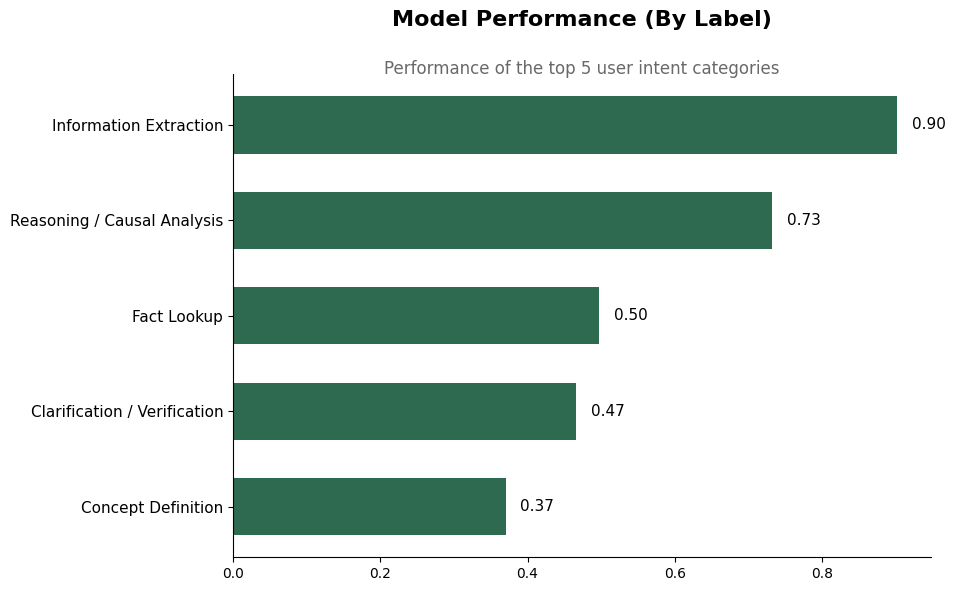
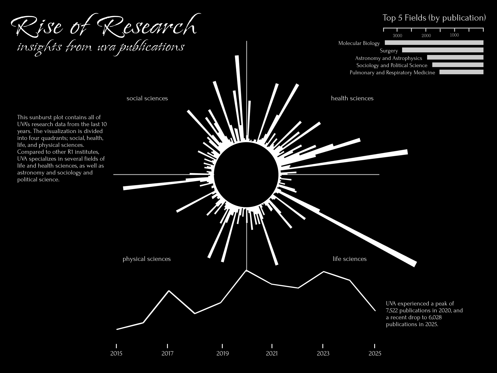
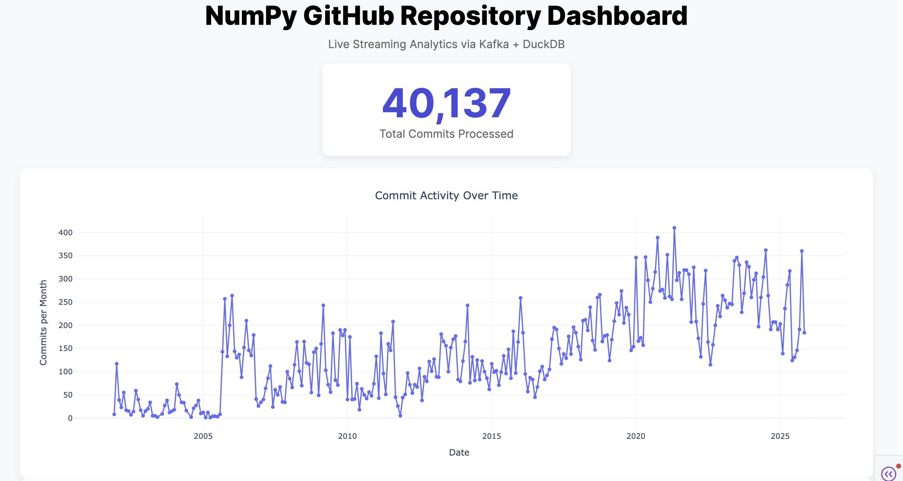
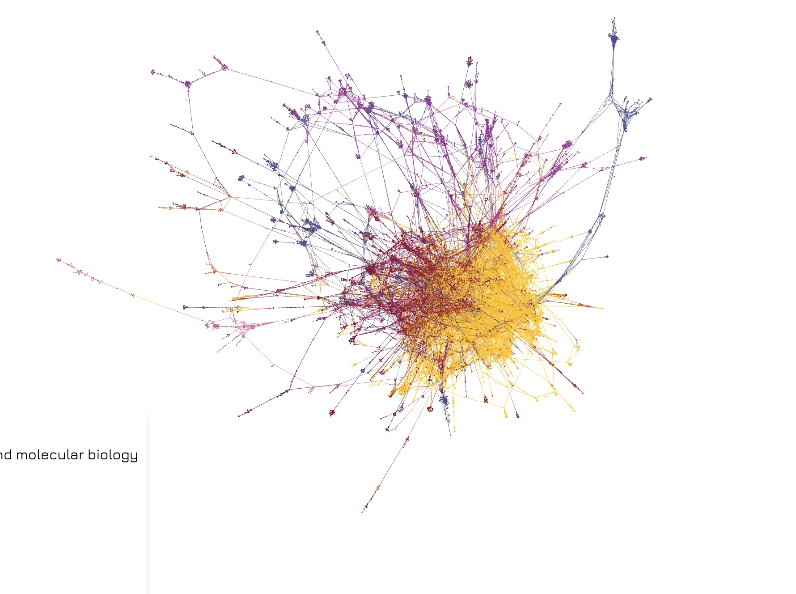

Laser cut wood postcard
May 2026
This project is a 3D rendition of my previously designed research sunburst chart, created by laser cutting wood and task board. Designed on Adobe Illustrator.
May 2026
This project is a 3D rendition of my previously designed research sunburst chart, created by laser cutting wood and task board. Designed on Adobe Illustrator.

May 2026
A machine learning model trained to classify user intent as a preprocessing step towards explainability.
Github: Intent Classification

April 2026
An animation and two posters created for submission to UVA's Data is Art competition using OpenAlex for R1 Institution publication data.
Github: dataArt

February 2026
A dashboard containing a UMAP embeddings space and a KDE plot of UVA research publications and proposals. This project was given to the UVA Research team to gain insights into grant data and PIs.
Github: Embeddings Scatterplot

December 2025
Partnered project looking at 40,000 commits across time and by author to the NumPy Repository using Kafka and DuckDB for data storage.
Github: NumPy Dashboard

October 2025
My first project with the Connected Data Hub at UVA. A dashboard containing a coauthorship network of different PIs at UVA alongside an interactive sunburst plot made in d3.js.
Dashboard: Click to View